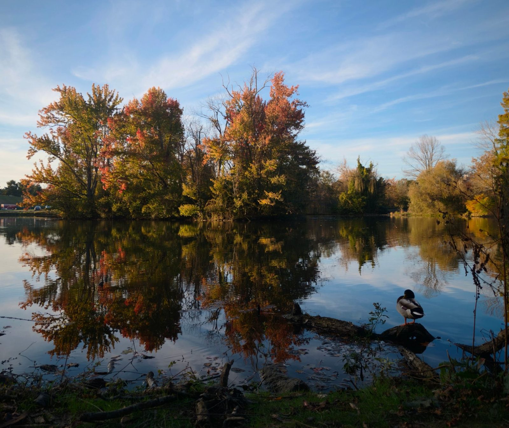
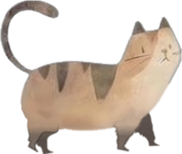

2020 – 2026
Ph.D. in PhysicsVirginia Tech, Blacksburg, VA · Thesis advisor: Patrick Huber
Dissertation defense: November 6, 2026

Research Assistant · Physics · Virginia Tech

I am interested in neutrino phenomenology. Neutrino physics serves as a gateway to Beyond the Standard Model (BSM) phenomena by offering candidates for dark matter, providing frameworks to resolve experimental anomalies, and explaining other important questions such as the origin of neutrino mass.
Current projects and earlier work are listed under Research projects in my CV.
Full list on INSPIRE-HEP and Google Scholar.

A watercolor tabby that lives on your desktop: it walks, sits, grooms and naps, keeps your Pomodoro timer, plays music while you work, and reminds you to rest. Double-click it to start the timer; right-click for presets and music.
Life comes with a default playlist; Study lets you add your own YouTube playlist.
Windows: unzip and run the .exe (keep the _internal folder next to it).
Mac: right-click the app → Open the first time.
Source & all releases